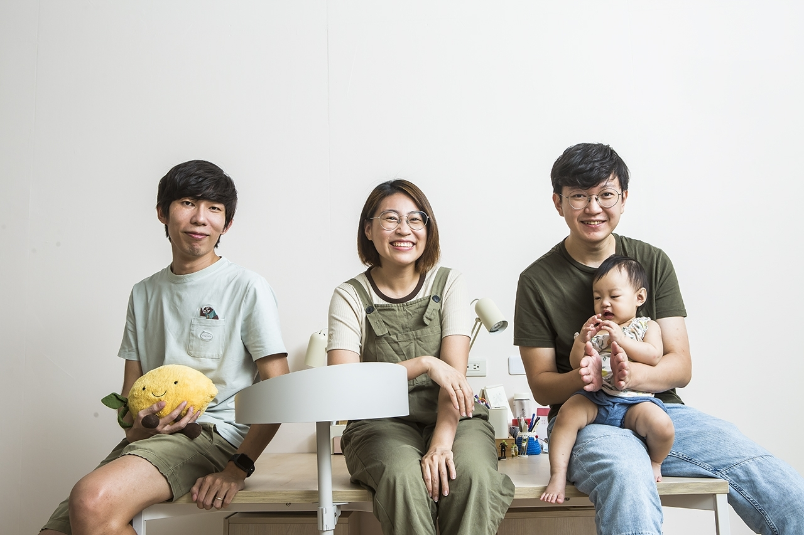
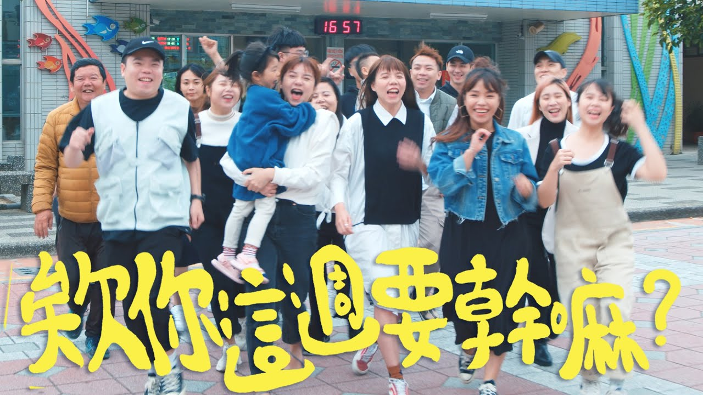
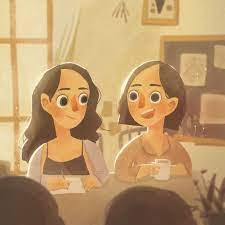

好味小姐

好味小姐，是一個由六貓組成的頻道。六貓分別是短褲、麻糊、蛋捲、米香、本丸、橘皮。頻道主要是更新貓料理、貓的生活等等，
裡面有許多豐富有趣的題材。除了主頻道還有相關的副頻道分別是：
一、好味小姐腦波弱：頻道主人_脆脆、剪輯師_阿斷、攝影師_很煩的生活頻道
二、好味營養師品瑄：頻道營養師的健康飲食頻道。
還有經營PODCAST<好味小姐開束縛 我還你原型>，是我非常推薦去聽的娛樂性質PODCAST!
欸你這週要幹嘛

欸你這週要幹嘛，一個生活、旅遊性質的頻道。頻道主人是Ariel，記錄著他與身邊家人、朋友的一些生活。頻道主要成員：頻道主人_Ariel、妹妹Shine、弟弟、老吳、室友......
頻道拍攝了許多旅遊、生活的相關主題，也會很清楚的感受到頻道成員平時相處的感覺，是一個很有趣、會讓人十分著迷的頻道。
李白<街頭故事>
">
李白，一個在街頭開始傾聽別人故事的畫家。李白的畫風非常溫暖，再配上在街頭幫人畫似顏繪時傾聽客人們故事的經歷，會讓人感覺像是被療癒一般。
在不同故事中了解到許多不同人的經歷，或許會聽到與自己相似的經歷而有所感。李白還寫了兩本書<療傷似顏繪><如果世界是一場派對>兩本書都有李白暖心的圖畫以
及文字，非常值得去看